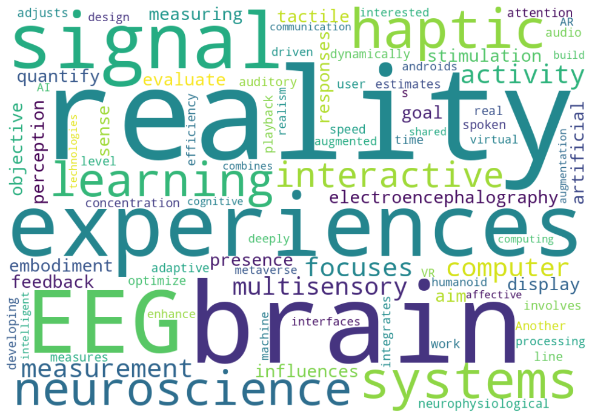

Who I am, what I study, and how I work.
I conduct research in Virtual Reality (VR) and Human-Computer Interaction (HCI).
I am interested in human sensation, perception, and higher-order cognition. By creating interfaces that apply those insights, I want to take on questions such as what reality is and what it means to be human.
I also care about translating research into society. To experience as much of the research process as possible, I work broadly across stages from basic investigation to application.
Accelerate the full path from research, to technology development, to business value, and open up one new experience after another to society.
To be someone who combines an investigative mindset,
the ability to build, and the drive to deliver.
I want to cross disciplinary boundaries and become a person who can
conceive, implement, and
propose to the world experiences that do not yet exist.
Meaningful outcomes depend on collaboration, and collaboration rests on trust. I treat basic professional habits such as communication, responsiveness, and punctuality as fundamentals rather than extras.
Technology that truly helps society requires both depth in a core field and exposure to adjacent areas. I therefore place importance on experiences that span disciplines and phases, from basic research to implementation.
I do investigate prior work and define problems, but I often start building as soon as a broad direction is clear. Working prototypes reveal things that planning alone cannot, and I use those discoveries to refine the course quickly.
My university years began during COVID-19, when opportunities did not simply appear by waiting. Since then, I have tried to keep a wide radar, notice interesting chances early, and step into them on my own initiative.
Research and development should eventually improve lives across the world. I value collaboration with people from different backgrounds, and I have tried to build that foundation through experiences such as overseas internships and international learning.
Even strong ideas have little impact if they stay only in someone's head. I try to turn research and development efforts into visible outputs such as papers, releases, or public communication, using AI tools where they help speed up the process.
At major turning points in life, I have chosen the path that let me pursue what I genuinely wanted to work on rather than simply follow the surrounding trend. That consistency is an important part of my identity.
I can keep pursuing what I care about because people around me choose to understand and support it. I do not take that for granted, and I try to respond to that trust with responsibility and steady effort.
Research keywords that continue to shape how I frame questions, build prototypes, and connect fundamental inquiry with practical systems.
